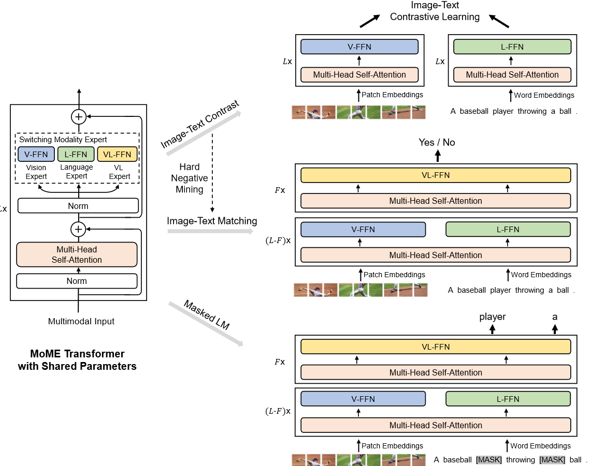

多模态系列(四)- BLIP
论文代码：https://github.com/salesforce/BLIP
转载自:多模态系列论文–BLIP 详细解析_blip论文-CSDN博客
多模态系列(四)- BLIP
1. 研究动机及本文贡献
从模型角度：最近的一些方法通常有2种模型实现方式，1）Transformer Encoder结果的模型，比如Clip、ALBEF，2）Transformer Encoder、Decoder结构的模型，比如SimVLM。第一种Encoder Only的模型无法直接运用到Text Generation的任务，比如图像生成字幕，因为它只有编码器没有解码器，需要加一些模块做Text Generation的任务；第二种Encoder、Decoder虽然有Decoder可以做生成的任务，但因为没有一个统一的框架，所以它不能直接用来做Image Text Retrieval的任务，因此需要提出一个Unified的统一的框架，用一个模型把所有的任务都解决。BLIP这篇论文就是（利用了很多VLMO里的想法）把模型设计成一个灵活的框架，从而构造一个Unified Framework。
从数据角度：目前表现出色的方法比如Clip、ALBEF和SimVLM都是在大规模从网上爬下来的非常Noisy的Image Text Pair数据集上预训练模型，虽然当数据集足够大能够弥补一些嘈杂数据集带来的影响，但BLIP论文指出，使用Noisy的数据集去预训练效果不佳，不是最优解，BLIP论文提出Captioner和Filter 模块，Captioner的作用是给定任意一张图片，用Captioner生成一些字幕，从而得到大量的合成数据Synthetic Data，同时去训练一个Filtering Model，把图像和文本不匹配的对从数据集里删掉。作者训练的Captioner模型，可以生成非常好的有描述性的文本，因此训练的filtering模型会选择这个图像文本对去进行模型的训练，而不用原来那个真实的图像文本对去进行训练，这样能够有效地清洗Noisy的DataSet，让模型更好地利用数据集里的图像文本配对信息。
上图是一个例子，原本网上爬取下来的文本对完全不匹配，之所以文本是这样的，是因为可以有利于搜索引擎去搜索。
2. 相关工作
由于BLIP论文借鉴了ALBEF和VLMO的思想，因此先简单介绍这两篇论文。
2.1 ALBEF模型

ALBEF的模型分成三个结构：1）视觉编码器，2）文本编码器，3）多模态编码器。训练步骤如下：
- 输入一张图像进入Transformer Encoder，它一共有N层；输入一个文本进入这个文本的编码器，它有L层。得到对应的图像文本特征之后，先做一个ITC（Image Text Contrasting）对比学习的Loss，把图像和文本特征分别学好。
- 文本特征继续进入Self-Attention Layer去训练，图像特征通过一个Cross-Attention Layer进来，然后和文本特征去进行融合，经历了N-L层的多模态的编码器之后，得到多模态的特征。
- 用多模态的特征做Image Text Matching任务，从而训练更好的模型。
文本端要把一个N层的Transformer Encoder分成L层和N-L层，因为作者想维持计算量不变，跟Clip相同，左边一个12层的Transformer Encoder，右边也是一个12层的Transformer Encoder，不想增加更多的多模态融合的计算量，但是多模态这部分又特别的重要，相对而言文本这端不那么重要，所以就把这边12层的计算量给分成了两部分。
2.2 VLMO模型

针对维持计算量的问题，VLMO没有拆分两部分，而是设计一个Mixer of Expert MoE网络，让它变得极其的灵活。它只有一个网络，Self-Attention层全都是共享参数，唯一根据模态不同而改变的地方是Feed Forward Network，用Feed Forward Vision、Feed Forward Attacks和Feed Forward Multi Model去区别不同的Modality，训练不同的Expert。这样就用统一的一个模型，即训练的时候是一个模型，推理的时候可以根据不同的任务选择这个模型中的某一部分去做推理。VLMO用大量的实验证明Self-Attention层确实是可以共享参数的，它跟模态没什么关系。
3. 贡献1–Unified Framework
3.1 BLIP模型
BLIP的模型结构称为MED（Mixture of Encoder and Decoder），就是把编码器和解码器混到一起，模型包含四个部分，图像有一个N层的标准的VIT模型，Self-Attention和Feed Forward均采用标准格式，文本有三个模型，分别算三个不同的目标函数，跟VLMO非常像。它根据输入模态的不同、目标函数的不同，它选择一个大模型里不同的部分去做模型的forward。
第一个文本模型是Text Encoder，N层做分类的任务，当得到了文本特征之后，它就去跟这个视觉特征去做ITC loss。
第二个文本模型是Image Grounded Text Encoder，是一个多模态的编码器，借助图像的信息去完成一些多模态的任务，得到ITM loss。到这里左边这一部分就是一个ALBEF，但是它跟ALBEF有一点不同，就是它借鉴了VLMO，Self Attention层可以共享参数，就不需要把一个文本模型拆分成两个部分使用，这里同样的颜色代表共享参数，图中的SA层是共享参数的。所以第一个文本编码器和第二个文本编码器基本一样，SA和FF全都是一致的，只不过第二个多了一个Cross Attention层。
第三个文本模型是Image-grounded Text decoder。目前的结构还是只能做这种VQA VRVE这种Understanding的任务，所以在后面再加一个文本的Decoder，就可以做生成的任务，对于Decoder来说它的输入输出的形式和尤其是第一层的这个Self-Attention不太一样，因为它不能看到完整的句子，必须像训练GPT模型一样把后面的句子都mask掉，只通过前面的信息去推测后面的句子，所以它的第一层用的是Causal的Self-Attention，也就是因果关系的自注意力去做一些因果推理。这里它做的是Causal Self-Attention跟前面的Bidirectional Self-Attention就不一样了。除了第一层的这个自注意力之外，后面的这个Cross-Attention和Feed-forward就跟前面全都是共享参数的。所以它新添加了第三个Text Decoder，但事实上参数量并没有增加多少，只是增加了一些Causal的Self-Attention。最后的目标函数就是用的GPT系列的Language Modeling，也就是给定一些词，去预测剩下的那些词，这篇论文里作者要做生成式的任务，所以更好的选择是使用Language Modeling的目标函数。
3.2 BLIP目标函数
BLIP三个目标函数中，前两个跟ALBEF和VLMO都是一样，使用ITC（Image-Text Contrastive loss）和ITM（Image-Text Matching loss），只不过第三个从MLM（Masked Language Modeling）换成了LM（Language Modeling）。
- ITC: 使用对比损失来约束image与text的特征，positive靠近，negative远离。
- ITM: 选取对比计算中的hard negative，要求网络计算其是否匹配，赋予网络具有挑战的任务。
- MLM: BERT的预训练函数，ALBEF和VLMO也用这个目标函数，类似完形填空，将一个句子某个中间词mask掉，再预测这个中间词，属于双向模型
- LM：mask掉句子后半部分，然后用前半部分去预测句子后面内容。
其他细节：
对于三个文本模型来说，它们对应的token不一样，第一个文本模型就用的是CLS Token，第二个用的是Encode，第三个用的是Decode，这些模型都很难训练，因为在做每一次Training Iteration的时候，图像端只需要做一次forward，但文本端在要做三次forward，要分别通过这三个模型去得到对应的特征，然后去算对应的目标函数，所以非常耗时。
BLIP是ALBEF的原班人马做的,所以用到了很多ALBEF的技巧:
- 算ITC的时候也用了Momentum Encoder去做更好的Knowledge Distillation和更好的数据级的清理。
- 算ITM Loss的时候，也像ALBEF一样利用ITC算的Similarity Score做Hard Negative Mining，从而每次都用最难的负样本去算ITM，增加Loss的有效性。
4 贡献2–Cap Filter Model
BLIP这篇论文第二个贡献点，也是最重要的贡献称为Cap Filter Model。目前从网页上爬取的数据集最大的问题是图片文本对不匹配，也就是说这里的不好，作者用红色表示，然后Coco是手工标注的，作者认为图片文本一定匹配，用绿色来表示。
4.1 filter model
1.动机
作者认为，如果用Noisy的数据集去预训练一个模型，效果就不是最好，因此需要清理数据集，从而达到最优解。因此需要训练一个能够给出图像文本相似度的模型，也就是Filiter模块的由来
2.训练方法
本文训练一个能够提供图像文本之间相似度的模型，相似度高的匹配，相似度不高的不匹配。训练方法是将已经提前预训练好的MED，也就是BLIP模型拿出来，把图像模型和两个文本模型，就是分别做ITC和ITM的那两个文本模型拿出来在Coco数据集上做微调，微调过后的MED就叫做filter。接下来用这个模型计算图像文本的相似度，尤其是image text matching分数，就可以确认图像和文本是不是一个match。若不match就可以把它拿掉。通过filter作者把原始爬下来的noisy的IT的文本对（红色的）变成了更干净的图像文本对（绿色的），到这里任务就完成了。
4.2 captioner model
作者发现，BLIP模型训练好的decoder非常强，有时候生成的句子比原始的图像文本对好很多，即使原来的图像文本对是一个match，但是新生成的文本更匹配，质量更高。所以作者用生成的文本充当新的训练数据集，具体的，作者在coco数据集上把已经训练好的image grounded text decoder又微调了一下，得到了captioner，然后给定任意一张从网上爬下的图片，用这个captioner给这个图片生成新的字幕，也就是红色这里的，经过filter筛选后，添加到数据集中，它是synthetic data。最后通过captioner和filter数据集变大。以cc12million为例，（，）是filter过后的cc12million，它还是原来从网上爬下的图像文本对，只不过是filter过后变少，但质量也变高了。（，）是cc12million合成的新生成的图像文本对。（，）是手工标注的Coco数据集。总之数据集不仅变得更大，而且质量变得更高了。再用新的d去预训练BLIP模型，模型的提升非常显著。这就是本文提出的第二个创新点，这个finetune的capfilter模型做到了数据集上的bootstrapping（Bootstrapping算法，指的就是利用有限的样本资料经由多次重复抽样，重新建立起足以代表母体样本分布的新样本）。
例子：
图中上面的是直接从网页端下载的文本，下面的是captioner新生成的文本，红色的代表被filter掉的文本，绿色代表filter以后保留下来的文本，也就是跟图片更匹配的文本，可以看出filter和captioner的强大之处
表1中对比了captioner ，filtering模式到底带来什么样的提升，C代表captioner，F代表filter。可以观察到：
不论是用了filter还是用captioner，效果都会有提升。
用captioner以后提升是更加显著的，也就意味着captioner带来的data diversity多样性更让模型受益，因为尤其是对大模型或者大数据集的训练来说，偶尔数据集有点noise无所谓，模型都是能够处理的，但因为模型参数量太大，需要大量大量的数据，所以只要能生成更多更好的数据，它往往就能够受益。
captioner和filter同时用效果就达到最好。这个表格里倒数第3，4两行都是打了对号，也就说都用了captioner和filter，但一个叫base一个叫large因为BLIP跟VLMO一样分阶段训练：
- stage1：用嘈杂的数据集预训练了一个模型。
- stage2：用CoCo去funtune captioner和filter，再把数据集重新处理，得到一个新的更大的质量更好的数据集。
- stage3：用新的数据集又pre-train一个BLIP。
这几个步骤互不相干，可以分开训练或者分开使用。因此第二阶段生成新的数据集的时候，可以用更大的模型去生成更好质量更高的数据集，并不一定是backbone并不是说backbone的模型是base，capfilter模型就一定要用base，生成数据这一步完全是一个额外的步骤，理论上也可以用任何一种方式去生成pseudo-labeling伪标签。
因此，BLIP large训练出来的这个captioner filter生成更好的数据后，可以训练其他模型，比如VLMO，CoCa，BEiT-3，它是一个非常通用的工具，因为他的目的就是生成更好的数据。
例子1：How to fine tune stable diffusion: how we made the text-to-pokemon model at Lambda
例如一个finetune SD去生成各种各样的pokemon model的例子。项目中说道图片数据集很容易就找到了Pokemon dataset from FastGAN，但是没有对应的文本，于是作者就通过BLIP的captioner filter生成图像字幕，甚至没有做任何的finetune，效果就非常好。
例子2：Laion coco: 600M synthetic captions from Laion2B-en | LAION
例如，Laion Coco这个数据集刚开始先推出了Laion 400 Million，和OpenAI的Clip的400 Million数据集去对齐，接下来又推出了更大的Laion 2 Billion，Laion 5 Billion这些开源的大规模数据集，极大的促进了这个多模态学习的进展。他们也用BLIP模型和两个Clip模型不停的做filtering和captioning的过程，最后得到Laion Coco 600 Million这个数据集。它具体的做法：
1）给定任何一张图片，它先用最大的BLIP模型去生成40个caption。
2）用Clip去做Ranking看看最后Retrieve谁排前谁排后，这里用OpenAI Vision Transformer Large选最好的5个caption。
3）用OpenAI的Clip模型，但这次是用ResNet50做一次重新的Ranking然后把最好的那个选出来，这样子你就有一个图像文本对，一个图像对应一个文本。
4）用一个比较小的T0的模型去修复了一下语法，文本的标点符号使文本看起来更真实更正确。
所以BLIP是一篇非常好的论文，不只提出了一个模型框架，而是它提出的Caption Filtering这个方法非常有效，而且具有普适性，可以拿它去做很多的工作。